달을 보는 순간,
우리는 이미 우주 안에 있다.
이번 기획 「달을 읽는 여름밤」은 달에서 출발해 우주의 기원과 인간의 미래로 시선을 넓힙니다. 달의 탄생에서 우주의 기원, 우주비행사의 일상에서 외계 지성과의 첫 만남까지, 그리고 우주에서 바라본 작고 푸른 지구까지. 스무 권의 책을 다섯 가지 주제로 엮었습니다.
어디서 시작해도 좋습니다. 달을 연구하는 과학자의 삶에서 출발해도 좋고, 외계 문명과의 첫 만남에서 출발해도 좋습니다. 어느 책을 먼저 펼치든 괜찮습니다. 이 우주에는 틀린 입구가 없습니다.
우주 탐사
블랙홀
관측
첫 접촉
지구를 보다

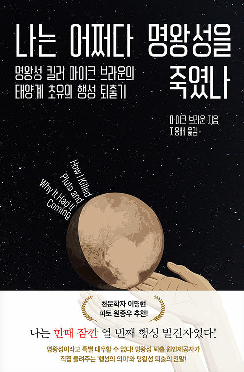
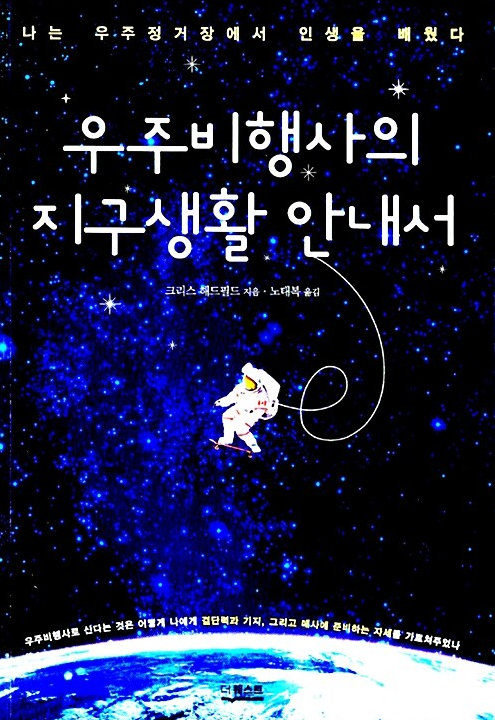
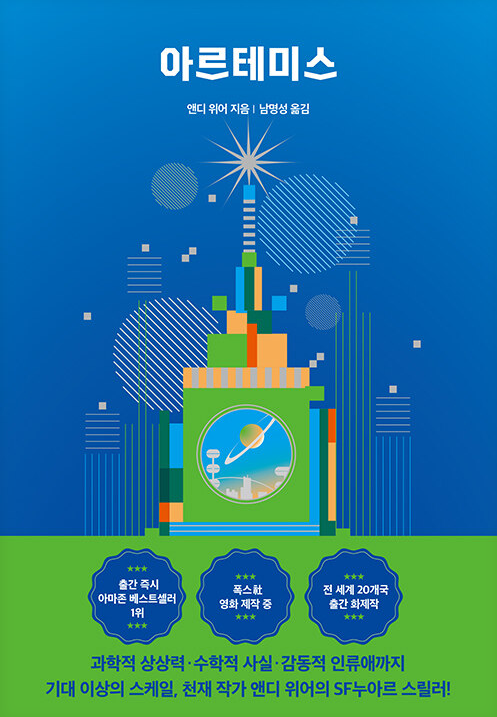

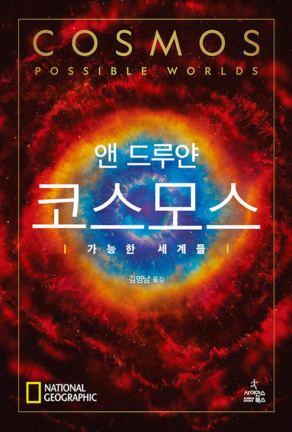
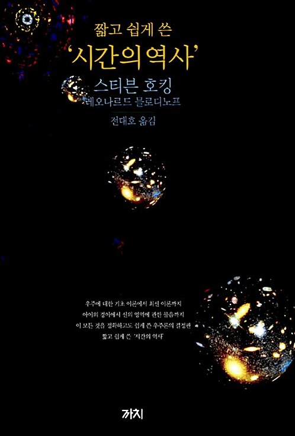
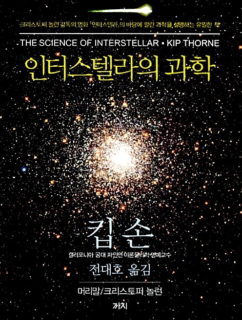
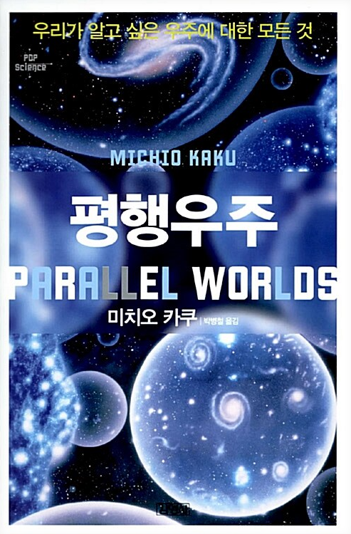
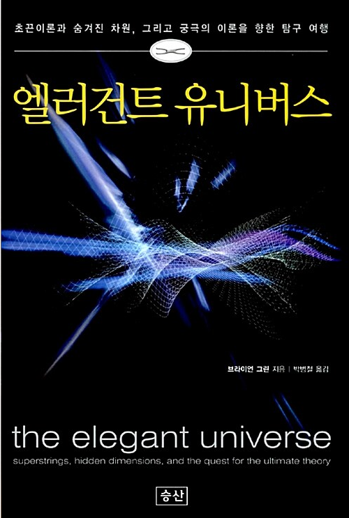
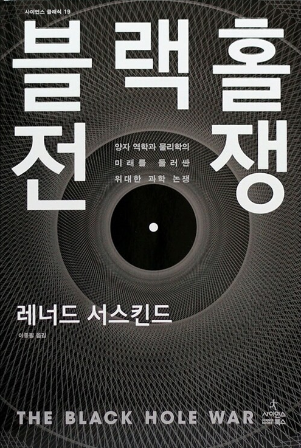
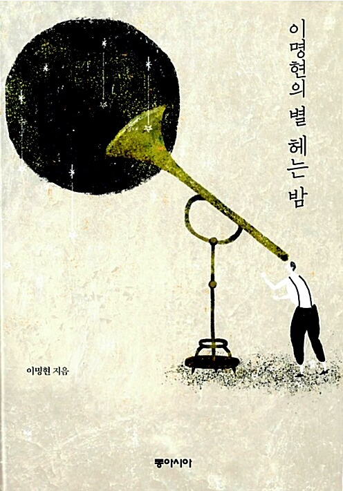


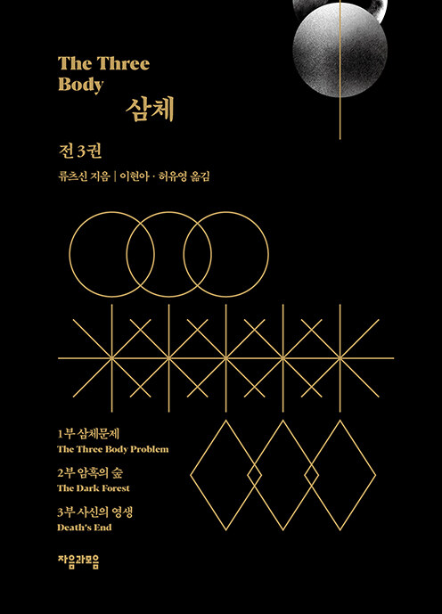
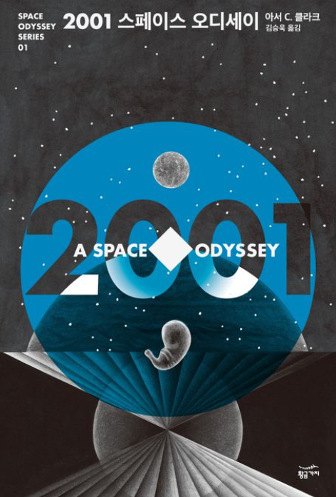

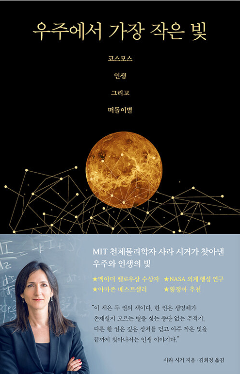
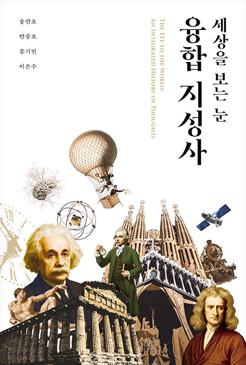

온라인에서 목록을 확인하고, 도서관에서 책을 만나보세요
추천도서 20권의 소장 위치와 대출 상태는 도서관 홈페이지에서 확인할 수 있습니다. 전시 기간에는 중앙도서관 추천도서 서가에서 책을 직접 살펴보세요.
중앙디지털도서관 2층
추천도서 서가에서 책을 직접 만나보세요.
2026년 7월 1일–8월 31일
우리는 달을 바라보며 우주를 꿈꿉니다. 책을 펼치면 그 꿈을 탐사와 발견의 역사로 바꾸어 온 사람들의 기록을 만납니다. 「달을 읽는 여름밤」은 달에서 출발해 블랙홀과 외계 문명을 지나, 다시 작고 푸른 지구로 돌아오는 독서 여행입니다. 이 여름, 한 권의 책이 당신이 바라보는 우주를 조금 더 넓혀 주길 바랍니다.
— 제주대학교 중앙도서관